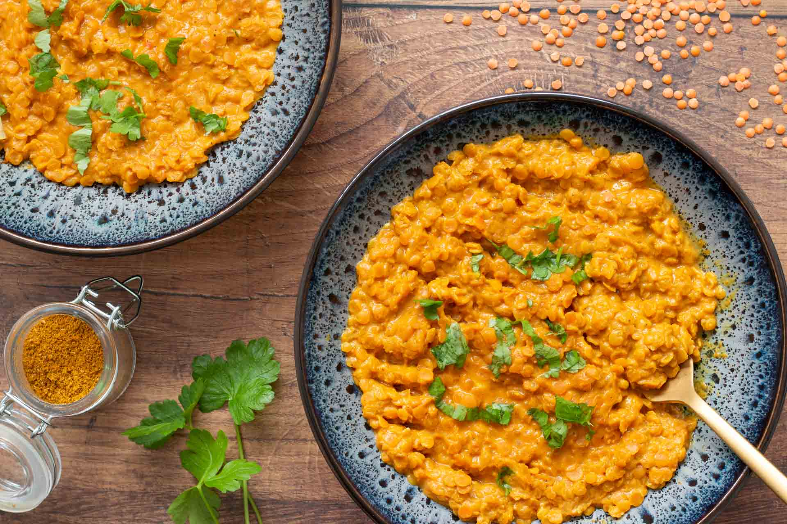

Dahl de lentilles corail

Description
Le Dahl est un plat indien végétarien composé de lentilles corail et d’épices.
Riche en protéines végétales, il permet de réduire sa consommation de viande et
se préparer des repas sains et équilibrés en semaine. C’est le plat idéal du
« batch cooking » ou l’art de préparer ses plats en avance.
Ingredients
- 250g de lentilles corail
- 250g d'eau
- 240g de lait de coco
- 200g de purée de tomate
- 1 oignon
- 1 gousse d'ail
- 1 cuillère à soupe de curry
- 1 cuillère à café de curcuma
- 1 cuillère à café de gingembre
Steps
- Rincez les lentilles puis égouttez-les.
- Pelez puis émincez l’oignon et l’ail. Faites-les fondre dans une poêle
(sans colorer) avec un filet d’huile d’olive.
- Ajoutez vos lentilles corail, la purée de tomate, l’eau,
le lait de coco et les épices. Salez et mélangez l’ensemble des ingrédients.
- Faire cuire 30 minutes à couvert sur feu moyen en remuant de temps en temps.
Ajoutez si besoin un peu d’eau en cours de cuisson pour éviter que les lentilles accrochent.
- Servir bien chaud avec quelques feuilles de persil ou de coriandre.